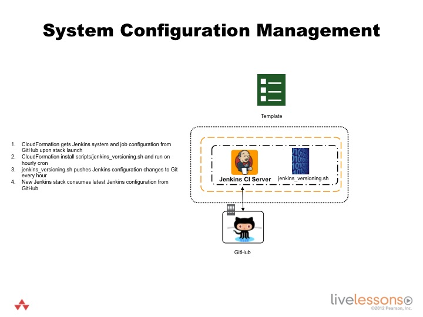

7.2 - Version system configurations and other artifacts
Learning Objectives
By the end of this lesson you will be able to -
Version the Jenkins configuration.
Version Configurations

System Configuration Management
Open the Jenkins versioning file from the AWSCLI instance. You can also find the file by visiting https://github.com/stelligent/devopsinthecloud/blob/master/scripts/jenkins_versioning.sh